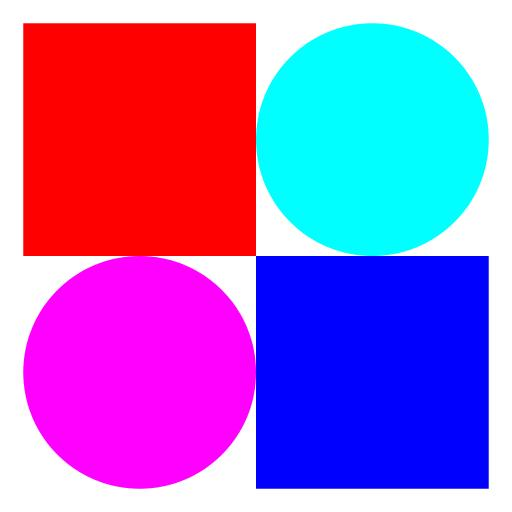

CSC 300/Data Structures in Java I
Assignment: Draw a logo contained filled shapes
10 points
Setting up
First, please read the section "Assignments and grading" in the syllabus. Then, following the steps for creating programs, create a package called drawLogo.
Specifications
Using the DrawShapes class in the week 1 examples package, write a class called DrawLogo that draws four filled shapes as seen in the image below. The shapes are positioned by specifying the location of their centers.
- The magenta circle is centered at (0.25, 0.25).
- The cyan circle is centered at (0.75, 0.75).
- The red square is centered at (0.25, 0.75).
- The blue square is centered at (0.75, 0.25).
Here is a smaller version of what your program should produce:
Submission instructions
When done correctly, you will have a single program DrawLogo.java in a package called drawLogo. This is located in your file system under the workspace folder you created for Eclipse. Starting at that folder, navigate to algs4/src/drawLogo. Zip that folder (that is, zip the folder drawLogo NOT just the file DrawLogo.java) into a zip file called drawLogo.zip and submit that zip file into the D2L dropbox for this assignment no later than its due date.
Four very important points to remember:
-
Your name must appear in a comment at the top of the program. You can insert it either in this style:
// Author: Alan Turing
or this style:/* * Author: Alan Turing */
- Give the files the names EXACTLY as specified, including the capitalization. Not doing so will cause points to be deducted.
- A submission may be graded as soon as it appears in its drop box. In other words, don't submit until you're sure that you want the program graded.
- Just after the due date, zero points will automatically be given any assignment not submitted.
Last update: March 28th, 2017